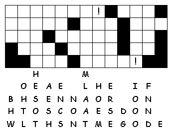

This week's lessons: Mark
11:1-11 or John
12:12-16, Psalm
118:1-2, 19-29;
Isaiah
50:4-9a, Psalm
31:9-16, Philippians
2:5-11, Mark
14:1-15:47 or Mark
15:1-39, (40-47)
Elementary School Pew-work
Listen hard to the Gospel. Afterward, circle the right word from the pairs of bold words in this story:
4The
disciples left and hid/found the donkey tied near a door that
faced the street. While they were untying it, 5some of the
people standing there asked, "Why are you riding/untying
the donkey?" 6They told them what Jesus had said, and
the people let them take it. 7The disciples led the donkey
to Jesus/Peter. They put some of their saddles/clothes
on its back, and Jesus got on. 8Many people spread
clothes/rocks on the road, while others went to cut
wheat/branches from the fields.
9In front of
Jesus and behind him, people/soldiers went along shouting,
"Hosanna! God bless the one who comes in the name of the
Lord! “

|
1. Whom did Jesus take with him to Gethsemane?
___________________________________________________________________________
2. How did Jesus say that he felt?
___________________________________________________________________________
3. What did Jesus pray for?
___________________________________________________________________________
4. What did the disciples do while Jesus prayed?
___________________________________________________________________________
5. How many times did the disciples fall asleep?
___________________________________________________________________________
Questions taken from Sunday School Lessons; http://www.sundayschoollessons.com/
No
Bible Study on Easter Sunday: Sunrise service, Church breakfast, and
Communion!
Easter:
Acts
10:34-43 or Isaiah
25:6-9, Psalm
118:1-2, 14-24, 1
Corinthians 15:1-11 or Acts
10:34-43, John
20:1-18 or Mark
16:1-8
2nd Sunday of Easter: Acts
4:32-35, Psalm
133, 1
John 1:1-2:2, John
20:19-31